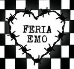

Puntos de encuentro
Desde las míticas juntadas en plazas y esquinas hasta los festivales y fechas de bandas en vivo que marcaron un antes y un después. Acá te invitamos a recorrer los espacios geográficos y culturales que la subcultura hizo propios para expresarse y conectar.

@Feria_emo
Illustraciones, remeras de bandas, cadenas y pines. Un punto de encuentro donde la estética se fusiona con la música y el diseño independiente. Pasá a mirar los stands y la estética que define a la comunidad emo.
La Bond
Si hablamos de puntos de puntos fundamentales, la Bond Street se lleva el primer puesto. Durante décadas, esta galería en pleno Recoleta fue (y sigue siendo) el refugio de todas las subculturas urbanas. Un laberinto de locales de tatuajes, disquerías y ropa.